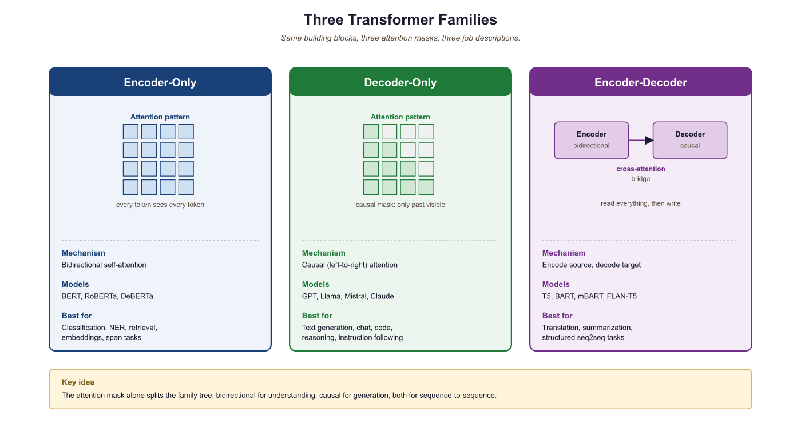
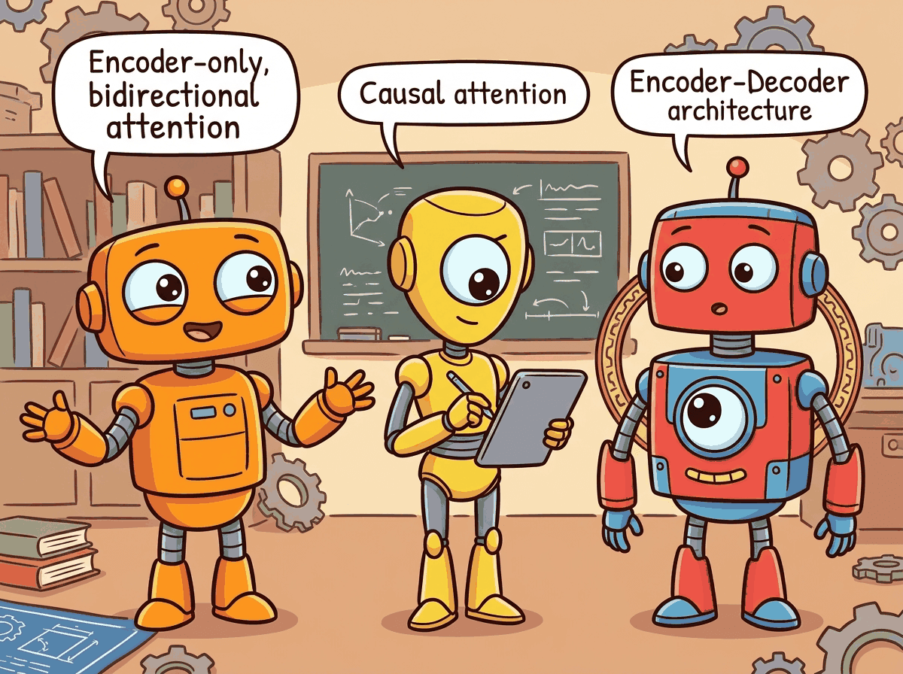
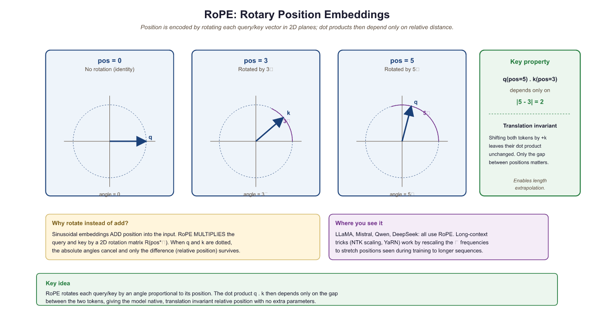
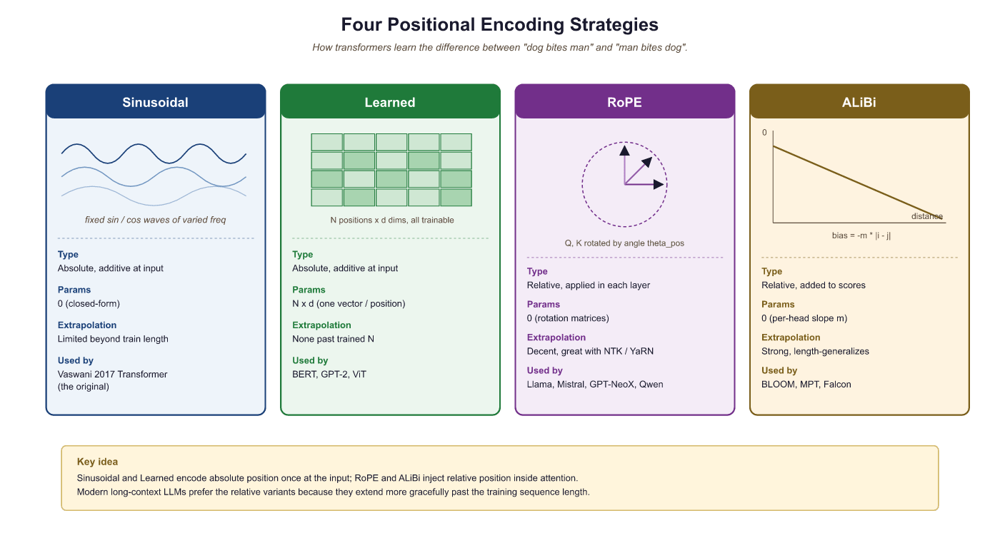

BERT reads both ways, GPT only looks left, and T5 just converts everything into a text-to-text problem. Family dinners are awkward.
Norm, Architecturally Confused AI Agent
Building on the attention mechanism from Section 3.1, this section catalogs the major design choices a modern Transformer makes within the attention paradigm: which architectural family to use (encoder, decoder, encoder-decoder); how to encode position (sinusoidal, learned, RoPE, ALiBi); how to make attention efficient (sparse, linear, FlashAttention, GQA, MQA, Differential); how many heads to use and why; and where to place LayerNorm. Stepping outside dense softmax attention entirely (SSMs, MoE, MLA) is the subject of Section 3.8.
Three families, one mental shortcut: BERT (encoder) reads, GPT (decoder) writes, T5 (encoder-decoder) reads-then-writes. Positional encoding is how attention learns word order, since the math itself is permutation-invariant. Without it, "dog bites man" and "man bites dog" look identical to the model.
3.5.1 The Three Architectural Families
If someone asks you "which Transformer should I use?", your first question should be "what are you trying to do?" The original Transformer is an encoder-decoder model, but since 2017 three distinct families have emerged. Each family uses a different subset of the Transformer's components and targets different types of tasks. Understanding when to use which architecture is a fundamental skill in applied NLP.
A workshop has three tools that look almost identical at first: a saw cuts in one direction, a plane shaves a flat surface, and a router does both with attachments. Encoder-only models are the saws (read once, classify), decoder-only models are the planes (generate forward), and encoder-decoder models are the routers (read then generate). Pick the wrong one and you can still get the job done; pick the right one and the work becomes effortless.


Prerequisites
This section builds on the complete Transformer architecture from Section 3.1 and the hands-on implementation in Section 3.3. Understanding self-attention, cross-attention, and causal masking from Section 2.3 is essential. The efficiency techniques discussed here connect directly to the inference-optimization strategies covered later in the book.
3.5.1.1 Encoder-Only (BERT Family)
Encoder-only models use bidirectional attention: every token can attend to every other token, including those to its right. This makes them excellent for understanding tasks (classification, token-level labeling, sentence similarity) but unsuitable for generation, since there is no causal structure.
BERT (Devlin et al., 2018) is trained with masked language modeling (MLM): 15% of input tokens are randomly masked, and the model must predict them. This pretraining objective forces the model to build rich bidirectional representations. Key descendants include RoBERTa (larger data, longer training), DeBERTa (disentangled attention with relative position), and ELECTRA (replaced-token detection, which is more sample-efficient than MLM).
3.5.1.2 Decoder-Only (GPT Family)
Decoder-only models use causal (left-to-right) attention with the auto-regressive language modeling objective. They are the dominant architecture for modern LLMs because: (a) the training objective is simple, scalable, and naturally aligns with text generation; (b) they can be prompted to perform virtually any task (classification, translation, reasoning) through in-context learning; and (c) they are straightforward to scale.
GPT-2 (Radford et al., 2019) demonstrated that a sufficiently large language model develops emergent abilities. GPT-3 (Brown et al., 2020) showed that these abilities improve reliably with scale. Today, virtually all frontier LLMs (GPT-4, Claude, LLaMA, Gemini, Mistral) are decoder-only.
3.5.1.3 Encoder-Decoder (T5 Family)
Encoder-decoder models process an input sequence with bidirectional attention (encoder) and generate an output sequence with causal attention (decoder), using cross-attention to condition the decoder on the encoder's output. This is the original Transformer architecture and remains the best choice for tasks with a clear input/output structure where the input benefits from bidirectional processing: translation, summarization, and speech recognition (Whisper).
T5 (Raffel et al., 2020) reframed all NLP tasks as text-to-text problems, demonstrating that a single encoder-decoder model could handle classification, translation, summarization, and question answering with the same architecture, just different input/output text formats.
3.5.2 Positional Encoding Variants
The deeper reason RoPE wins is that it makes attention scores a function of position difference, not absolute position, so a context-length extension only requires extrapolating one scalar (the rotation rate) instead of teaching the model a new vocabulary of position vectors. Sinusoidal embeddings break at extrapolation because the absolute-position basis becomes out-of-distribution; learned embeddings cannot extrapolate at all. RoPE's frequencies form a geometric series, borrowed from Fourier analysis: low-frequency dimensions encode long-range position, high-frequency dimensions encode local position. NTK-aware scaling and YaRN exploit this by rescaling only the low-frequency band, preserving the local geometry the model was trained on.
Transformers have no built-in notion of order. Without positional information, the model sees a sequence as an unordered set: "the cat sat on the mat" and "the mat sat on the cat" would be indistinguishable. Every positional encoding scheme solves this problem differently, and the choice has real consequences for how well a model generalizes to sequence lengths it has not seen during training. Four main approaches have emerged since 2017.
3.5.2.1 Sinusoidal Encoding (Vaswani et al., 2017)
The original "Attention Is All You Need" paper used a fixed, non-learned encoding: each position is represented by a vector of sine and cosine values at geometrically spaced frequencies. For position $pos$ and dimension index $i$:
The low-frequency dimensions change slowly across positions (giving a coarse sense of where in the sequence we are) while high-frequency dimensions oscillate rapidly (giving fine-grained local position information). Together they form a unique "fingerprint" for every position.
The positional encoding is added to the token embedding, not concatenated. Many readers expect that adding a position vector should destroy the token's meaning, the way adding noise to a JPEG destroys the picture. It does not, because the embedding dimensionality (say 768) is much larger than the effective rank needed to encode either tokens or positions, and the optimizer learns to allocate non-overlapping subspaces. The model can recover both "which token" and "which position" from the sum, similar to how you can recover two superimposed sine waves from their sum if their frequencies differ.
Key advantage: because the encoding is a fixed mathematical function, it can be evaluated at any position, including positions beyond the training sequence length. A model trained on sequences up to length 512 can in principle receive a sinusoidal encoding for position 1000. Whether it attends to that position correctly is a separate empirical question, but the encoding itself does not break.
Key limitation: sinusoidal encoding represents absolute positions. The model must implicitly learn that position 5 and position 15 are 10 steps apart; that relative relationship is not directly injected. This becomes a problem for tasks that depend heavily on relative structure rather than absolute location.
3.5.2.2 Learned Positional Embeddings (BERT, GPT-2)
A simpler alternative: treat positions exactly like tokens. Create an embedding table
nn.Embedding(max_length, d_model) and look up a learned vector for each position
index. This is precisely what our Section 3.3 implementation does with self.pos_emb.
Key advantage: the model can learn whatever positional representation is most useful for the task. If the corpus has strong structural patterns (e.g., the first token is often a subject, the last token is often a period), the learned embeddings can capture those patterns directly. In practice, learned embeddings perform comparably to or slightly better than sinusoidal on standard benchmarks.
Key limitation: the embedding table has exactly max_length rows.
If the model encounters a sequence longer than max_length at inference time, it has
no embedding for those positions. BERT's maximum length of 512 tokens is a direct consequence of
this fixed table. Workarounds (interpolating learned embeddings, fine-tuning on longer sequences)
exist but add complexity.
Both sinusoidal and learned embeddings encode absolute position: they tell the model "this token is at position 7," but not "this token is 3 steps before that one." For many NLP tasks, relative position is what matters: whether a verb is close to its subject is more important than whether the subject is at position 7 or 700. The next two approaches address this directly.
3.5.2.3 Rotary Position Embedding (RoPE)
RoPE (Su et al., 2021) has become the dominant positional encoding scheme in modern LLMs (used in LLaMA, Mistral, Qwen, Gemma). Instead of adding positional information to the input embeddings, RoPE applies a rotation to the query and key vectors in each attention head. The rotation angle depends on the position and the dimension index.
The key insight: after applying RoPE to queries and keys, their dot product depends only on their relative position, not their absolute positions. This is achieved by rotating pairs of dimensions by $pos \times \theta _{i}$:
Algorithm: Apply RoPE to Q or K
Input: vector x in R^{T x d_k} (one head), base frequency theta_0 = 10000
Output: rotated x' in R^{T x d_k}
// 1. Precompute per-pair inverse frequencies (i = 0..d_k/2 - 1)
For i = 0..d_k/2 - 1:
theta_i := theta_0^{ -2 i / d_k } // decays geometrically with dim index
// 2. Build cos/sin tables of shape (T, d_k/2)
For pos = 0..T-1, for i = 0..d_k/2 - 1:
cos_table[pos, i] := cos(pos * theta_i)
sin_table[pos, i] := sin(pos * theta_i)
// 3. For each token position, rotate each 2-dim pair
For pos = 0..T-1, for i = 0..d_k/2 - 1:
a := x[pos, 2 i]
b := x[pos, 2 i + 1]
x'[pos, 2 i] := a * cos_table[pos, i] - b * sin_table[pos, i]
x'[pos, 2 i + 1] := a * sin_table[pos, i] + b * cos_table[pos, i]
Return x'
Property (relative position): for any two positions m, n with rotation matrix R_pos,
< R_m q, R_n k > = q^T R_{n - m} k
so the post-rotation dot product depends only on (n - m), not on m or n alone.Source: Su et al., "RoFormer: Enhanced Transformer with Rotary Position Embedding" (arXiv:2104.09864, 2021). This relative-position property is what makes context-window extension via NTK-aware scaling and YaRN possible: rescaling theta_i shifts every position's rotation in a coherent way, so the trained relative-distance behavior generalizes to longer sequences.
import torch
# Rotary Position Embedding (RoPE): rotate pairs of dimensions by
# position-dependent angles so relative distance is encoded in dot products.
def apply_rope(x, freqs_cos, freqs_sin):
"""Apply Rotary Position Embedding to queries or keys.
x: (B, n_heads, T, d_k)
freqs_cos, freqs_sin: (T, d_k//2) precomputed cos/sin of rotation angles
"""
# Split into pairs and rotate
x_r = x.float().reshape(*x.shape[:-1], -1, 2) # (..., d_k//2, 2)
x0, x1 = x_r[..., 0], x_r[..., 1]
cos = freqs_cos.unsqueeze(0).unsqueeze(0) # broadcast over B, n_heads
sin = freqs_sin.unsqueeze(0).unsqueeze(0)
# 2D rotation: [cos -sin; sin cos] @ [x0; x1]
out0 = x0 * cos - x1 * sin
out1 = x0 * sin + x1 * cos
out = torch.stack([out0, out1], dim=-1).flatten(-2)
return out.type_as(x)
RoPE advantages: (1) it naturally encodes relative positions, (2) it requires no additional parameters, (3) it can be extended to longer sequences through frequency scaling (NTK-aware scaling, YaRN), and (4) it has strong empirical performance.
Three extension schemes have emerged to push a model trained at context length $L_{\text{train}}$ out to $L_{\text{test}} = s \cdot L_{\text{train}}$ without retraining from scratch, where $s$ is the scale factor (e.g., $s = 4$ to go from 4K to 16K). Each rescales the RoPE frequencies $\theta_i = b^{-2i/d}$ (with base $b = 10000$ in the original RoPE) but with a different bias toward high or low frequencies, and the differences matter because rotation collisions at small positions break in-distribution behavior even as they fix out-of-distribution extrapolation.
Position Interpolation (PI) (Chen et al., 2023) divides every position index by $s$ before rotation, equivalently scaling all frequencies as $\theta_i' = \theta_i / s$. PI keeps the rotation pattern globally compressed and is mathematically equivalent to interpolating the position embedding inside the trained window; it requires only ~1000 fine-tuning steps to recover quality. The drawback is that high-frequency bands (small $i$, which carry sub-token-distance information) get squeezed below their training distribution, so the model loses some precise short-range positional acuity. NTK-aware scaling (bloc97, 2023) addresses this by scaling the base rather than the frequencies: $b' = b \cdot s^{d/(d-2)}$, equivalently $\theta_i' = \theta_i \cdot s^{-2i/(d-2)}$. The exponent in $s^{-2i/(d-2)}$ is near 0 for the highest-frequency bands (small $i$) and approaches $-1$ for the lowest-frequency bands (large $i$). High-frequency rotations are left near their training values; only the low-frequency, long-range bands get stretched. This works zero-shot for modest $s$ but degrades for $s > 4$.
YaRN (Peng et al., 2023) combines NTK-aware scaling with two refinements. First, it partitions the $d/2$ frequency bands by their wavelength relative to the training context: bands whose wavelength is much shorter than $L_{\text{train}}$ are left untouched (these never wrap around the trained window, so they need no fix); bands whose wavelength exceeds $L_{\text{train}}$ are divided by $s$ (full PI for these); intermediate bands are smoothly interpolated. The smooth interpolation function $\gamma(i)$ uses a ramp between the two regimes:
with $\gamma(i)$ a clamped linear ramp in the band index. Second, YaRN multiplies the attention logits by a small temperature factor $\sqrt{1 + 0.1 \ln s}$ to compensate for the slightly different score distribution induced by the rescaled rotations. Empirically YaRN extends Llama-2 from 4K to 64K and 128K with only ~400 fine-tuning steps and matches or beats PI on long-context evaluations. References: Su et al., "RoFormer," arXiv:2104.09864 (2021); Chen et al., "Extending Context Window via Position Interpolation," arXiv:2306.15595 (2023); Peng et al., "YaRN: Efficient Context Window Extension of Large Language Models," arXiv:2309.00071 (2023).
Figure 3.5.4 contrasts how the three schemes treat the RoPE frequency spectrum: PI squeezes every band uniformly, NTK-aware scaling spares the high-frequency (short-range) bands and stretches only the low-frequency ones, and YaRN partitions the spectrum into untouched, ramped, and fully interpolated regions.
RoPE is powerful but still fundamentally couples the model to a maximum trained sequence length. An alternative approach avoids learned or computed embeddings entirely, instead injecting position information directly into the attention computation itself.
3.5.2.4 ALiBi (Attention with Linear Biases)
ALiBi (Press et al., 2022) takes a minimalist approach: it adds a linear bias to the attention scores that penalizes distant positions. No positional encoding is added to the embeddings at all. For head $h$, a bias of $-m_{h} \cdot |i - j|$ is added to the attention score between positions $i$ and $j$, where $m_{h}$ is a head-specific slope (a fixed, non-learned geometric sequence: 1/2, 1/4, 1/8, …). The attention formula becomes:
The distance penalty grows linearly with separation. Each head has a different slope, so some heads are more "local" (high slope, sharp penalty) and others are more "global" (low slope, gentler penalty). The title of the original paper, "Train Short, Test Long," captures the key benefit: a model trained on sequences of length 1024 can extrapolate well to length 4096 because the bias function is just a linear ramp and never encounters an out-of-range index. ALiBi is used in BLOOM (176B) and several Falcon variants.
Key advantage: outstanding length extrapolation; extremely simple to implement (two lines of code); no additional parameters.
Key limitation: unlike RoPE, ALiBi biases are fixed and not learned, so the model cannot adapt its distance-sensitivity to the data. Empirically, RoPE tends to outperform ALiBi when the training and evaluation lengths are the same; ALiBi wins when lengths differ substantially.
3.5.2.5 Comparing the Four Approaches
The four positional encoding strategies occupy distinct points in a design space defined by whether position is absolute or relative, whether encodings are learned or fixed, and how well the approach generalizes to sequence lengths beyond training. The SVG diagram below shows each approach schematically, and the table beneath gives a quick reference.

| Method | Position type | Length generalization | Parameters | Key models | Compute cost |
|---|---|---|---|---|---|
| Sinusoidal | Absolute | Moderate (can evaluate beyond training length, but quality degrades) | None (fixed formula) | Original Transformer, some T5 variants | Negligible (precomputed) |
| Learned | Absolute | None (hard cap at max_length) | max_length × d_model | BERT, GPT-2, RoBERTa, ELECTRA | Negligible (one lookup per token) |
| RoPE (Sec 3.5.2.3) | Relative (via rotation) | Good; extendable with NTK/YaRN scaling | None (computed from frequencies) | LLaMA 1-3, Mistral, Gemma, Qwen, Gemini, GPT-NeoX | Small (rotation per head per layer) |
| ALiBi (Sec 3.5.2.4) | Relative (linear penalty) | Excellent (linear extrapolation) | None (fixed slopes) | BLOOM, some Falcon variants, MPT | Negligible (one addition per attention score) |
For a survey of which frontier models use which positional encoding in their production configurations, see Section 7.1. The KV cache interaction with RoPE (specifically, how cached keys and values retain their rotated coordinates across steps) is covered in Section 9.3.
- Three architectural families (encoder-only, decoder-only, encoder-decoder) serve different use cases; decoder-only dominates modern LLMs.
- Four positional encoding strategies exist: sinusoidal (fixed, absolute, length-generalizable), learned (trainable, absolute, fixed max length), RoPE (relative, no parameters, strong extrapolation), and ALiBi (relative linear penalty, excellent extrapolation). RoPE is now standard for frontier LLMs.
- Length extrapolation depends on how positions are encoded: learned embeddings fail beyond their lookup table, sinusoidal degrades gracefully, RoPE benefits from NTK-aware or YaRN scaling, and ALiBi extrapolates by construction.
Show Answer
Show Answer
Show Answer
What's Next?
The discussion continues in Section 3.5a: Efficient Attention, Multi-Head Reasoning & Normalization, which covers sparse attention, linear attention, FlashAttention, MQA and GQA, Differential Attention, why multiple attention heads matter, and the Pre-Norm vs. Post-Norm question (plus RMSNorm). After that, Section 3.6: GPU Fundamentals & Systems turns to systems-level concepts.